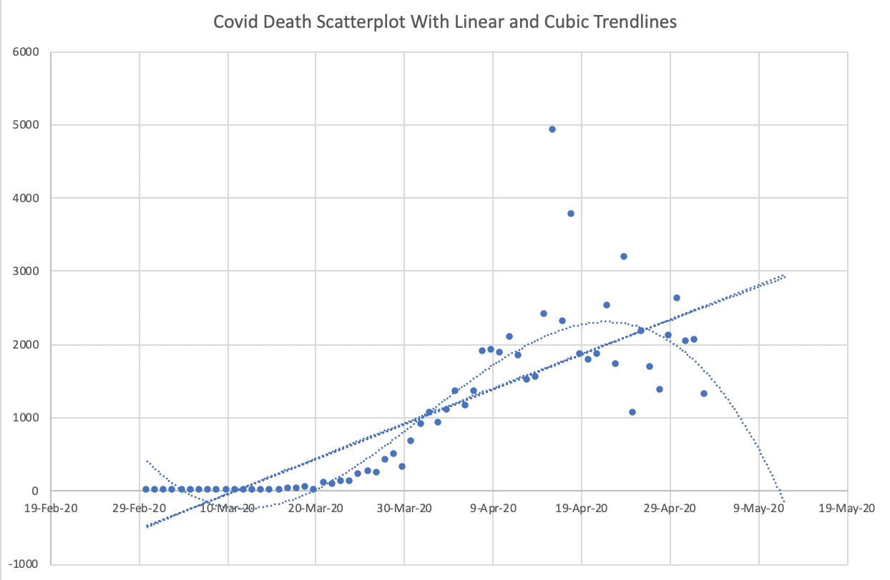

Week 5 Friday#
Slightly different schedule today:
Review (about 20 minutes)
Time to work on worksheets (about 10 minutes, Yufei and Hanson are here to help)
New material (polynomial regression)
import pandas as pd
import altair as alt
import seaborn as sns
Recap#
This week we’ve started the Machine Learning portion of the class. The most important points so far:
The most common scikit-learn workflow: import, instantiate, fit, predict.
Using scikit-learn for linear regression.
Linear regression is a model for regression, because we are trying to predict a continuous value. (You might think that’s obvious since it’s called linear regression, but next week we will learn logistic regression, which is actually used for classification.)
The coefficients found in linear regression have real-world interpretations, similar to partial derivatives.
Examples so far#
These coefficients, especially whether they are positive or negative, should make intuitive sense. The only exception is the "passengers" coefficient in the taxis dataset, which does not seem to have much impact on the duration of the trip (which is not surprising).
The taxis dataset#
Reminder: in this example, we were only considering hours after 16:00 (4pm).
Input features (also called predictors):
["distance", "hour", "passengers"]Target (or output):
"duration"Coefficients:
[ 2.40296826, -0.56721926, -0.01271133]
The Spotify dataset#
Here, “acoustic” is as opposed to “electronic”, and “valence” is a measure of positivity or happiness.
Input features:
["Acousticness", "Speechiness", "Valence"]Target:
"Energy"Coefficients:
[-0.33557117, -0.08205736, 0.21893852]
The mpg dataset#
This is the topic of Worksheet 10
Predictors:
["horsepower", "weight", "model_year", "cylinders"]Target:
"mpg"Coefficients: ???
Review of make_regression#
Generate artificial data for linear regression using the
make_regressionfunction. Use40data points, use an intercept of13, and use10for the standard deviation of the random noise. Use the same number of input variables as we used for the taxis and spotify datasets above.
from sklearn.datasets import make_regression
The outputs here might look more familiar now that we’ve worked with reg.fit. These are outputs suitable for input to that method, as in reg.fit(X, y).
X, y = make_regression(n_samples=40, n_features=3, bias=13, noise=10)
Use a seed value (it can be any one) so that we get reproducible results.
X, y = make_regression(n_samples=40, n_features=3, bias=13, noise=10, random_state=115)
Have
make_regressionreturn the true underlying coefficients, but don’t look at them yet.
Notice how we have a third variable name listed on the left-hand side now. Because of the coef=True keyword argument, the make_regression function is now also returning the true underlying coefficients. (There will be three coefficients, one for each input dimension.)
X, y, m = make_regression(n_samples=40, n_features=3, bias=13, noise=10,
random_state=115, coef=True)
Think of the following as the first five inputs.
X[:5]
array([[-0.53515533, -0.28121394, -0.80984729],
[ 1.38414644, 0.58136215, 0.06912911],
[-0.52796488, -1.34934136, 0.90754619],
[-1.01723921, -0.08196661, 1.37644765],
[-1.68657788, 1.21986477, 1.56731099]])
Think of the following as the first five outputs.
Comment: In Math 2D, if you have three points on a plane (and they don’t lie on a line), there is a simple formula for finding an equation for that plane. There is no simple formula in this case though, because our points do not lie perfectly on a plane (because of the noise=10 keyword argument we used). (Another difference is that here we would be in four dimensions, three input dimensions plus one output dimension, but that is not an essential difference from the Math 2D situation, the essential difference is the random noise.)
y[:5]
array([-25.25702371, 51.80947884, -52.92271378, -10.69766744,
67.66279245])
Fit a linear model to the data using scikit-learn.
The further we go with scikit-learn in Math 10, the more familiar this workflow should look to you.
Here we import the LinearRegression class.
from sklearn.linear_model import LinearRegression
Here we create an instance of that class. (This is analogous to evaluating something like pd.Series(["A", "B", "C"]), which creates an instance of a pandas Series.)
# instantiate (make an instance)
reg = LinearRegression()
Here we fit the linear model to the data.
This step is where all the impressive work by scikit-learn happens. In this particular case, it takes our 40 sample points and calculates what is the linear equation that “best” fits the data. (We’ll talk more about what “best” means later in the course.)
# fit
reg.fit(X, y)
LinearRegression()In a Jupyter environment, please rerun this cell to show the HTML representation or trust the notebook.
On GitHub, the HTML representation is unable to render, please try loading this page with nbviewer.org.
LinearRegression()
How close was the fit intercept to the true intercept?
Recall that we used bias=13 above when we called make_regression. That means we were using 13 as our true intercept. Notice that scikit-learn got very close.
reg.intercept_
13.237035896366805
How close are our fit coefficients to the true coefficients?
Recall that we had make_regression output m, but we haven’t looked at it yet. Here we do look at the value of m. It should make sense that it is length 3 (because we need one coefficient for each input dimension). The particular values were just randomly chosen by the make_regression function (we did not specify them).
m
array([ 9.10646209, 56.93379031, 0.68407512])
Here are coefficients found when we called reg.fit. They do not perfectly match the true coefficients, but they are pretty close.
reg.coef_
array([ 7.84284085, 58.74257281, 0.15682329])
Ten minutes to work on Worksheets#
Yufei and Hanson are here to help answer questions.
(Already done? Redo our taxis linear regression example, but rescale the input features so they have mean 0 and standard deviation 1 before calling fit. How do the coefficients change? The relative magnitudes of the coefficients are more meaningful if we perform this rescaling.)
Polynomial regression#
If you can perform linear regression with multiple input features, you can also perform polynomial regression.
Load the mpg dataset from Seaborn and drop missing values. Name the result
df.
df = sns.load_dataset("mpg").dropna(axis=0).copy()
For future reference, notice how the final column in df is called "name".
df.head(3)
| mpg | cylinders | displacement | horsepower | weight | acceleration | model_year | origin | name | |
|---|---|---|---|---|---|---|---|---|---|
| 0 | 18.0 | 8 | 307.0 | 130.0 | 3504 | 12.0 | 70 | usa | chevrolet chevelle malibu |
| 1 | 15.0 | 8 | 350.0 | 165.0 | 3693 | 11.5 | 70 | usa | buick skylark 320 |
| 2 | 18.0 | 8 | 318.0 | 150.0 | 3436 | 11.0 | 70 | usa | plymouth satellite |
Find a degree 3 polynomial to model “mpg” as a function of “horsepower”.
(Warning 1. These coefficients are not as interpretable as they are for linear regression. Warning 2. We can automate some of the following steps using a scikit-learn class called PolynomialFeatures.)
Here are the degrees we want to allow. You can think of this like the list [1, 2, 3], but it is not a list, it is a Python range object. The nice thing about writing it this way is, if you later want to use degree 6, for example, you can just change the 4 to a 7 in the following code, and I believe everything else below can remain unchanged.
# degrees we want
degs = range(1,4)
Here we add a new column to the DataFrame for each desired power of horsepower. It might be a little inefficient to for example now have the “horsepower” column duplicated in the dataset (with the duplicate called "h1"), but this dataset is small enough that it doesn’t matter.
for d in degs:
df[f"h{d}"] = df["horsepower"]**d
Notice how the "name" column is no longer the final column. Also notice how the "h2" column is the square of the "h1" column, and the "h3" column is the cube of the "h1" column. Also notice how the "h1" column is identical to the "horsepower" column, just because df["horsepower"]**1 is the same as df["horsepower"].
df.head(3)
| mpg | cylinders | displacement | horsepower | weight | acceleration | model_year | origin | name | h1 | h2 | h3 | |
|---|---|---|---|---|---|---|---|---|---|---|---|---|
| 0 | 18.0 | 8 | 307.0 | 130.0 | 3504 | 12.0 | 70 | usa | chevrolet chevelle malibu | 130.0 | 16900.0 | 2197000.0 |
| 1 | 15.0 | 8 | 350.0 | 165.0 | 3693 | 11.5 | 70 | usa | buick skylark 320 | 165.0 | 27225.0 | 4492125.0 |
| 2 | 18.0 | 8 | 318.0 | 150.0 | 3436 | 11.0 | 70 | usa | plymouth satellite | 150.0 | 22500.0 | 3375000.0 |
We are now ready to perform polynomial regression. We want to find coefficients for a model of the form \(y \approx m_3 x^3 + m_2 x^2 + m_1 x + b\), where y is the “mpg” value and where x is the “horsepower” value. Notice that this is identical to finding coefficients for a model of the form \(y \approx m_3 h_3 + m_2 h_2 + m_1 h_1 + b\), which is exactly what we can do using linear regression.
Important summary: if you can perform linear regression using multiple columns, then you can also perform polynomial regression. Reason: simply include powers as new input columns, like what we are doing here.
reg2 = LinearRegression()
Here is an important point that we haven’t seen yet: the reg2.coef_ attribute is not defined until after we call reg2.fit. This should make sense: at this stage, we have not shown reg2 any of the data, so how would it know what the coefficients might be?
reg2.coef_
---------------------------------------------------------------------------
AttributeError Traceback (most recent call last)
Cell In [20], line 1
----> 1 reg2.coef_
AttributeError: 'LinearRegression' object has no attribute 'coef_'
Here are the columns we are going to use. This will be a linear regression with three input variables.
pred_cols = [f"h{d}" for d in degs]
pred_cols
['h1', 'h2', 'h3']
Reminder: here is how you get a sub-DataFrame using just certain columns. (We don’t need double square brackets here, because pred_cols is already a list. The inner square brackets are usually to make a list.)
df[pred_cols]
| h1 | h2 | h3 | |
|---|---|---|---|
| 0 | 130.0 | 16900.0 | 2197000.0 |
| 1 | 165.0 | 27225.0 | 4492125.0 |
| 2 | 150.0 | 22500.0 | 3375000.0 |
| 3 | 150.0 | 22500.0 | 3375000.0 |
| 4 | 140.0 | 19600.0 | 2744000.0 |
| ... | ... | ... | ... |
| 393 | 86.0 | 7396.0 | 636056.0 |
| 394 | 52.0 | 2704.0 | 140608.0 |
| 395 | 84.0 | 7056.0 | 592704.0 |
| 396 | 79.0 | 6241.0 | 493039.0 |
| 397 | 82.0 | 6724.0 | 551368.0 |
392 rows × 3 columns
Now we fit reg2 to the data. Notice how we are using df[pred_cols] for our input and df["mpg"] for our target output.
reg2.fit(df[pred_cols], df["mpg"])
LinearRegression()In a Jupyter environment, please rerun this cell to show the HTML representation or trust the notebook.
On GitHub, the HTML representation is unable to render, please try loading this page with nbviewer.org.
LinearRegression()
Here are the coefficients. Based on what we were saying with the taxis dataset (“Oh look, the number of passengers is not very meaningful to the duration of the taxis ride, because the coefficient is pretty small”), you might think the “h2” and “h3” columns are not very meaningful here, because their coefficients are so small. But look at the values in these columns, they are huge (often over a million in the “h3” column), so even with these small coefficients, there is still a meaningful impact of these columns.
reg2.coef_
array([-5.68850128e-01, 2.07901126e-03, -2.14662591e-06])
We were running low on time at this point, so let’s quickly add a predicted mpg column to the DataFrame.
df["pred"] = reg2.predict(df[pred_cols])
Here we can see the predicted mpg values on the far right. For example, our initial predicted value is approximately 17.15, while the true for that row is 18.
df.head()
| mpg | cylinders | displacement | horsepower | weight | acceleration | model_year | origin | name | h1 | h2 | h3 | pred | |
|---|---|---|---|---|---|---|---|---|---|---|---|---|---|
| 0 | 18.0 | 8 | 307.0 | 130.0 | 3504 | 12.0 | 70 | usa | chevrolet chevelle malibu | 130.0 | 16900.0 | 2197000.0 | 17.153421 |
| 1 | 15.0 | 8 | 350.0 | 165.0 | 3693 | 11.5 | 70 | usa | buick skylark 320 | 165.0 | 27225.0 | 4492125.0 | 13.782683 |
| 2 | 18.0 | 8 | 318.0 | 150.0 | 3436 | 11.0 | 70 | usa | plymouth satellite | 150.0 | 22500.0 | 3375000.0 | 14.890157 |
| 3 | 16.0 | 8 | 304.0 | 150.0 | 3433 | 12.0 | 70 | usa | amc rebel sst | 150.0 | 22500.0 | 3375000.0 | 14.890157 |
| 4 | 17.0 | 8 | 302.0 | 140.0 | 3449 | 10.5 | 70 | usa | ford torino | 140.0 | 19600.0 | 2744000.0 | 15.904046 |
Here is a reminder of what the true data looks like.
alt.Chart(df).mark_circle().encode(
x="horsepower",
y="mpg"
)
Here is our fit data. It’s not obvious that it’s a cubic polynomial, but it’s clear that it is not a straight line at least.
alt.Chart(df).mark_circle().encode(
x="horsepower",
y="pred"
)
Warning: Don’t misuse polynomial regression#
Relevant quote:
“We are drowning in information but starved for knowledge.” John Naisbitt, Megatrends, 1982

